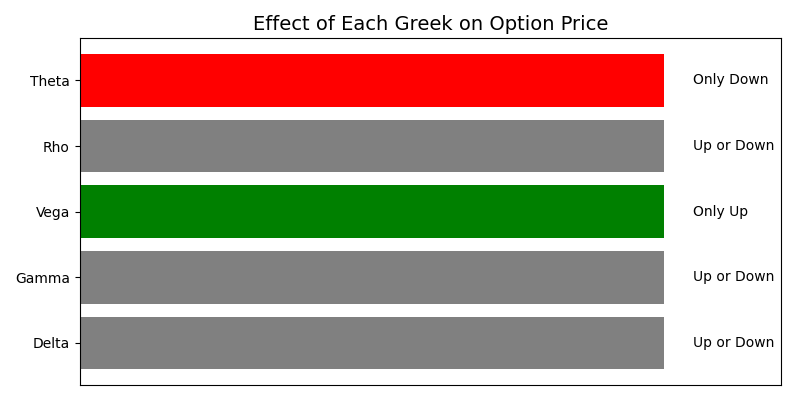
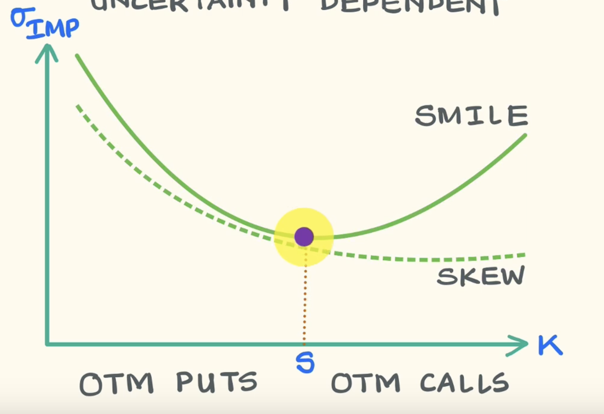
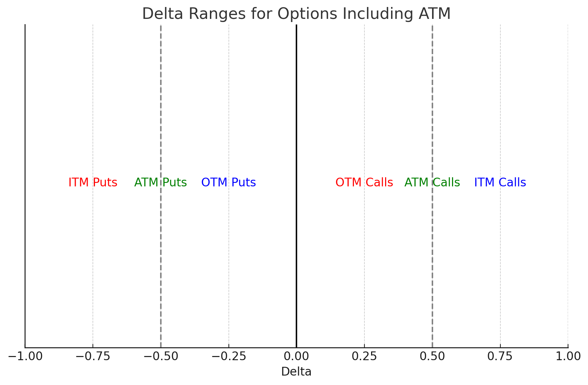
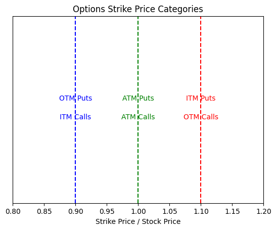
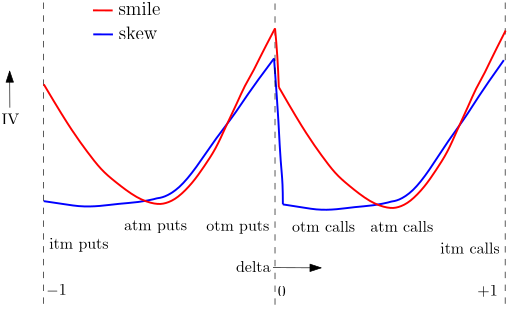
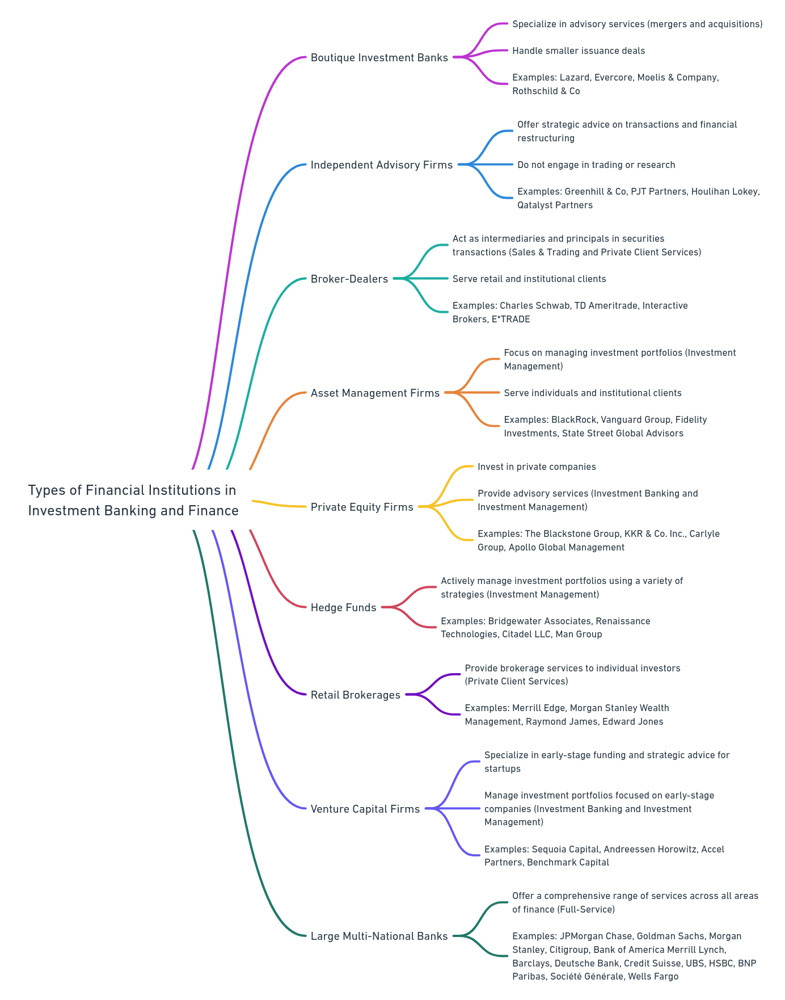
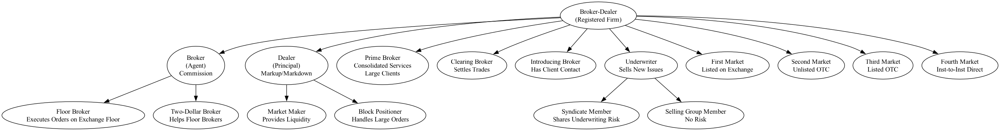

| Act | Market Covered | Key Points |
|---|---|---|
| Securities Act of 1933 | Primary Market | Requires registration of new issues with SEC; prospectus delivery; full and fair disclosure; governs IPOs and other new offerings. |
| Securities Exchange Act of 1934 | Secondary Market | Regulates exchanges and OTC trading; established SEC; requires broker-dealer registration; ongoing reporting (10-K, 10-Q, 8-K). |
| Trust Indenture Act of 1939 | Corporate Bond Market | Requires trust indenture for corporate bonds over $5M with maturities over 1 year; protects bondholders via a trustee. |
| Investment Company Act of 1940 | Investment Companies | Regulates mutual funds, closed-end funds, UITs; governs issuing shares to the public; sets standards for operations. |
| Investment Advisers Act of 1940 | Advisory Services | Regulates investment advisers; requires registration if giving advice for compensation; fiduciary duty to clients. |
| Blue Sky Laws (State) | State-Level Securities | Require state registration of securities unless exempt; designed to protect investors from fraud. |
| Maloney Act of 1938 | Self-Regulation | Amended 1934 Act to allow for SROs (e.g., FINRA) to oversee broker-dealers. |